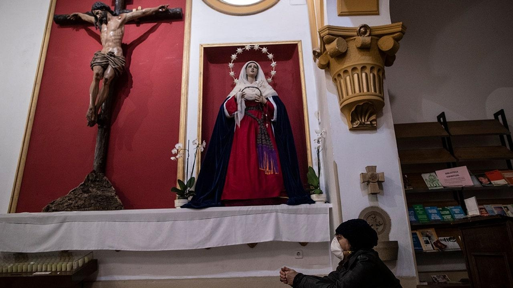

Spain approves plans for sexual abuse victims of Catholic Church to be compensated financiallySpain on Tuesday approved a plan aimed at making reparation and economic compensation for victims of sex abuses committed by people connected to the Catholic Church. It also announced the future celebration of a public act of recognition for those affected and their families. The Minister of the Presidency and Justice, Félix Bolaños, said the plan was based on recommendations in a report by Spain's Ombudsman last year. From that report he said it was concluded that some 440,000 adults may have suffered sex abuse in Spain by people linked to the church and that roughly half of those cases were committed by clergy. Bolaños said the compensation would be financed by the church. But in a statement Tuesday, Spain’s Bishops Conference rejected the plan, saying it discriminated against victims outside of church circles. No details of how much or when financial compensation would be paid were released. Neither was a date set for any public act of recognition. Bolaños said the plan aimed to "settle a debt with those victims who for decades were forgotten by everyone and now our democracy aims to repair" that, and make it a central part of government policy. After years of virtually ignoring the issue, Spain’s bishops apologized for the abuses committed by church members following the Ombudsman's report but disputed the number of victims involving the church as exaggerated. That report accused the church of widespread negligence. Bolaños said the government hoped to carry out the plan over the next four years in collaboration with the church. The project will include free legal assistance for all victims of sexual abuse and it will reinforce the prevention supervision in schools. Only a handful of countries have had government-initiated or parliamentary inquiries into clergy sex abuse, although some independent groups have carried out their own investigations. |
 |